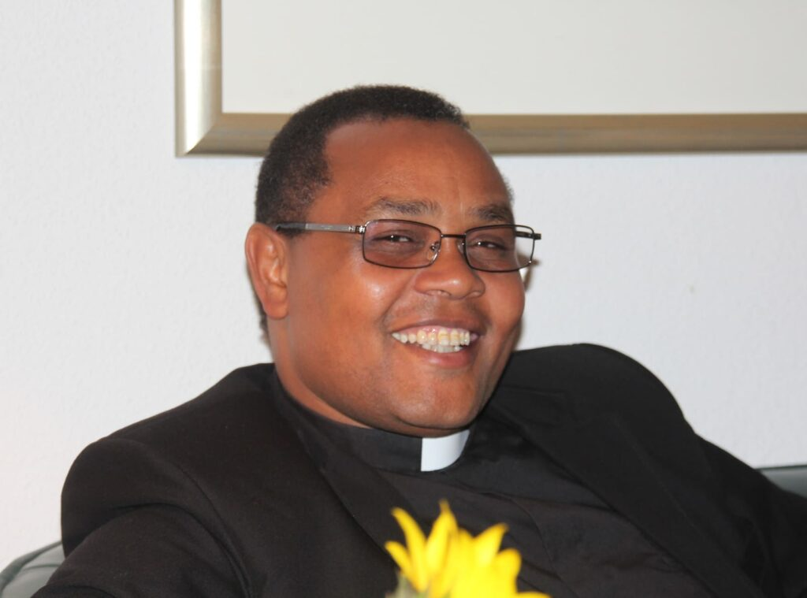
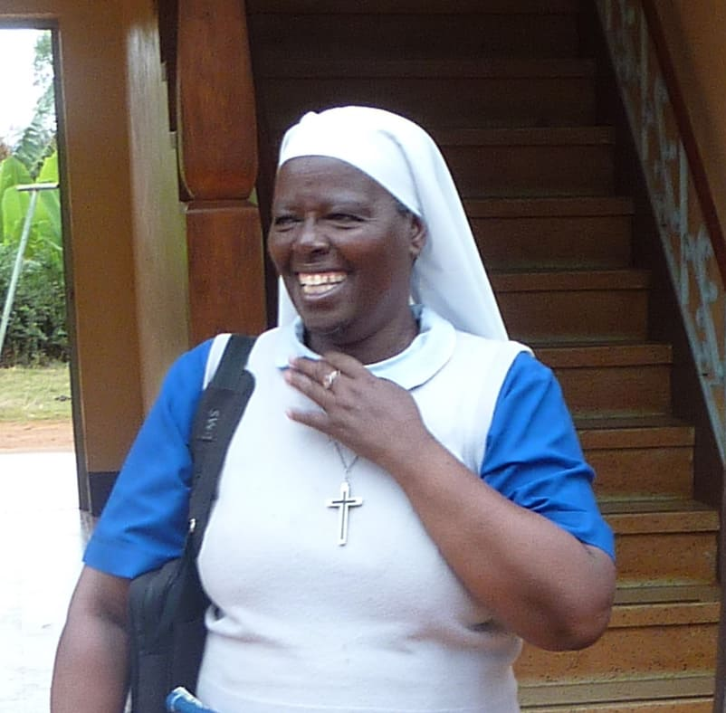
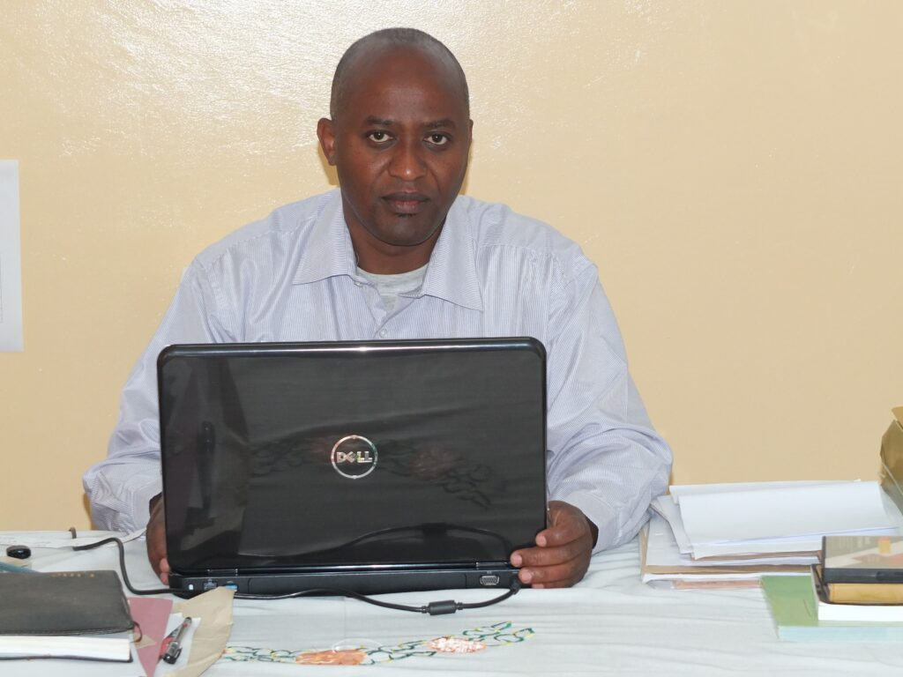
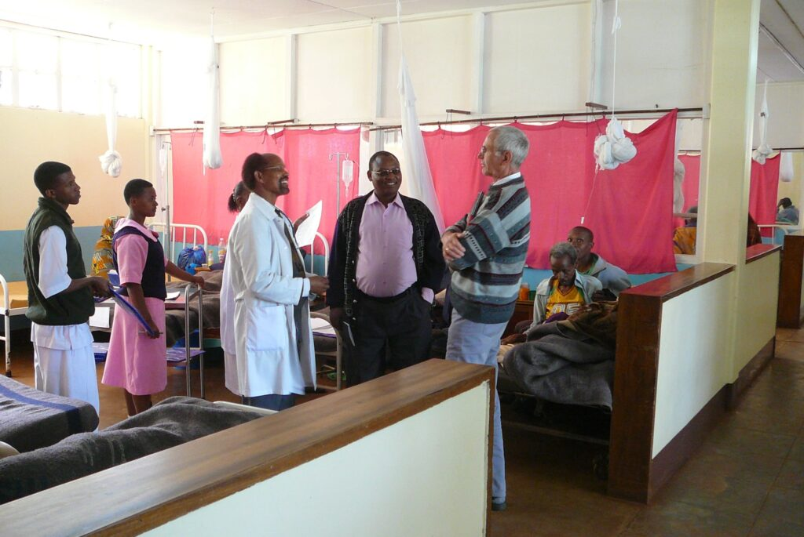
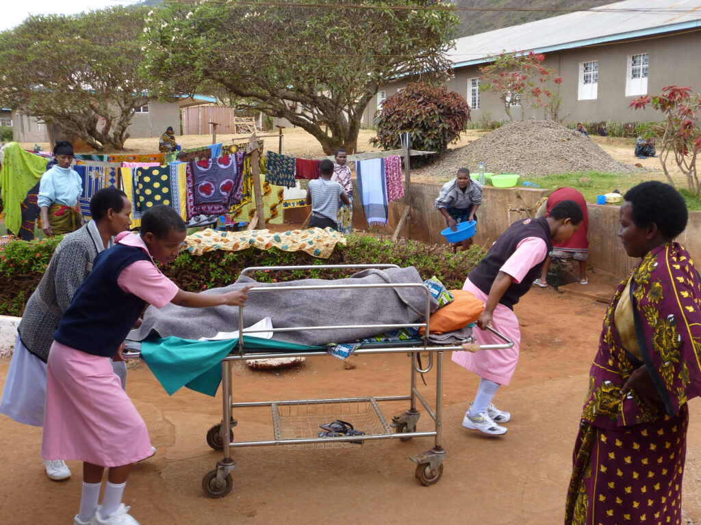
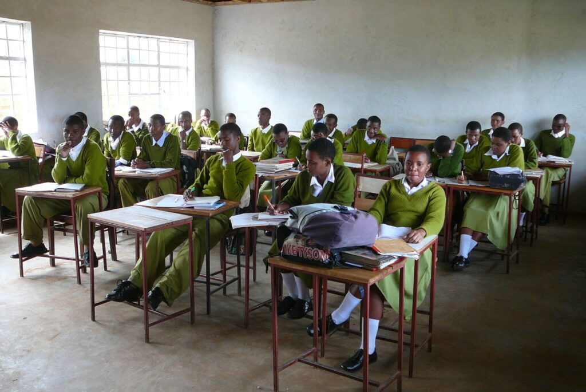
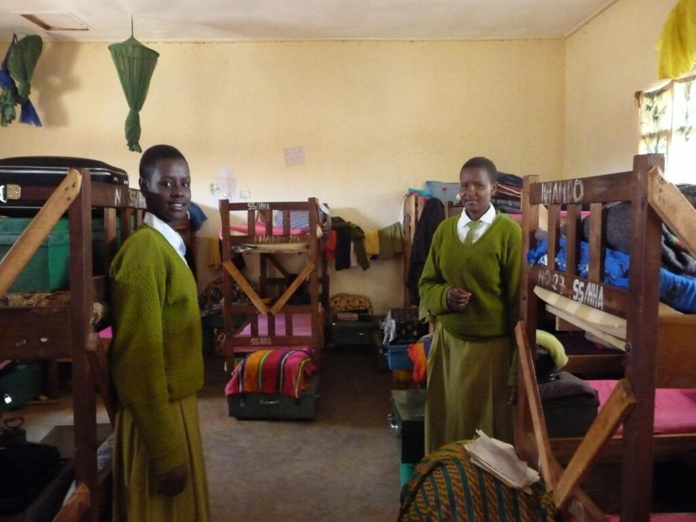

Drei Menschen, die unsere Arbeit tragen.
Wir unterstützen mit unseren Projekten Schulen und Gesundheitseinrichtungen der Diözese Mbulu. Sie liegt in der Region Manyara im Norden Tansanias.
Wie in fast allen Entwicklungsländern sind – historisch gesehen – die Kirchen neben ihrer seelsorgerlichen Tätigkeit Träger höherer Schulen und von Krankenstationen und Krankenhäusern. Erst in den vergangenen 20 bis 30 Jahren engagiert sich auch der Staat zunehmend im ländlichen Bereich.
Die Diözese Mbulu erstreckt sich über etwa 180 km in Nord-Süd-Richtung und 120 km von West nach Ost. In ihrem Gebiet leben etwa 1,2 Millionen Menschen. Etwa ein Drittel hängt der traditionellen Religion an – die Dienste der Einrichtungen werden allen Menschen angeboten.

Antony Lagwen
Bischof der Diözese seit 2018 – doch mit unseren Projekten bereits seit 2003 eng verbunden, damals als Leiter der Finanzabteilung der Diözese. Das Bild zeigt ihn bei einem Besuch in Bietigheim-Bissingen 2019.

Sr. Basilisa Panga
Unsere Partnerin in Tansania für die Projekte im Gesundheitsbereich. Sie ist Ordensschwester in einem afrikanischen Orden, Ärztin und hat den Master of Health Systems Management einer tansanischen Universität.
Als Health Secretary der Diözese Mbulu koordiniert sie alle Gesundheitseinrichtungen: die Krankenhäuser in Dareda und Bashanet, 15 Krankenstationen, eine Schwestern- und Hebammenschule in Dareda sowie das Laboranten-Kolleg in Bashanet.

Fr. Valentine Karama
Unser Partner für die Projekte im Bildungsbereich. Er ist Priester und koordiniert als Education Secretary der Diözese Mbulu die fünf Sekundar- und Berufsschulen sowie zahlreiche Kindergärten, die jeweils den Kirchengemeinden zugeordnet sind.
In unserem Student Support Program koordiniert er die Vergabe der Schulstipendien.
Krankenhäuser, Schulen, Schlafsäle.
Ein Einblick in die Einrichtungen, die wir gemeinsam mit der Diözese Mbulu fördern.




Eine direkte Verbindung.
Kein Mittler, kein Overhead. Unsere Spenden gehen in konkrete, dokumentierte Vorhaben unserer Partner.